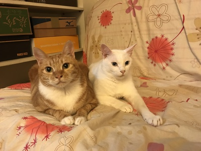
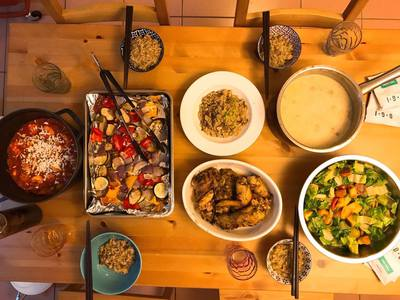
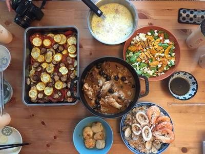
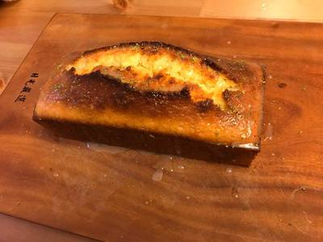
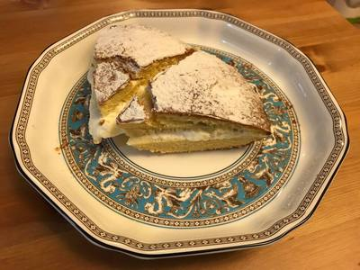

Hey, I'm Syd
我是喜德，雙子座，目前居住在台北，職業是網站開發工程師
養了兩隻貓陪伴，一公一母，棉花糖和南瓜泥

喜歡旅行了解各國風俗民情還有飲食文化
幾年前離職，給自己放了一段長假，從土耳其一路自助遊遍巴爾幹半島到英國，還在流浪ing旅遊書店辦了場分享會， 印象最深刻的國家，那應該就是阿爾巴尼亞了。
喜歡下廚，擅長西式料理，常常呼朋引伴約三五朋友到家裡聚餐


這半年迷上甜點，不過成品多半不太好看，很多都沒拍下來


是個美食吃貨，問我美食準沒錯
偶而下班會去小酌喝點東西，還蠻喜歡B Line by A Train
喜歡電影，尤其是韓國電影，偏好偏灰暗類的，朴贊郁的《復仇三部曲》、《追擊者》
關於音樂，以前很常跑live house，i.e. The Wall、河岸留言、Legacy Taipei， 這陣子常聽的是怕胖團、告五人、Mary see the future還有林強
喜歡辦活動，每年年底一定會辦耶誕節交換禮物，收到我的惡魔禮物，保證讓你哭笑不得。
最後如果不嫌棄棄的話可以加我Facebook Syd's Facebook
「用彼此的過往，交換一點真心。」